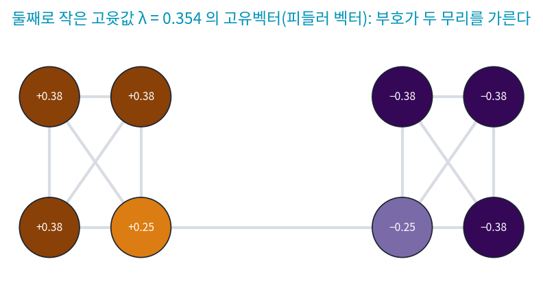
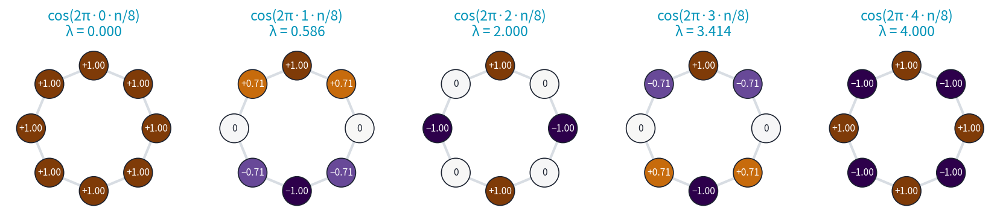
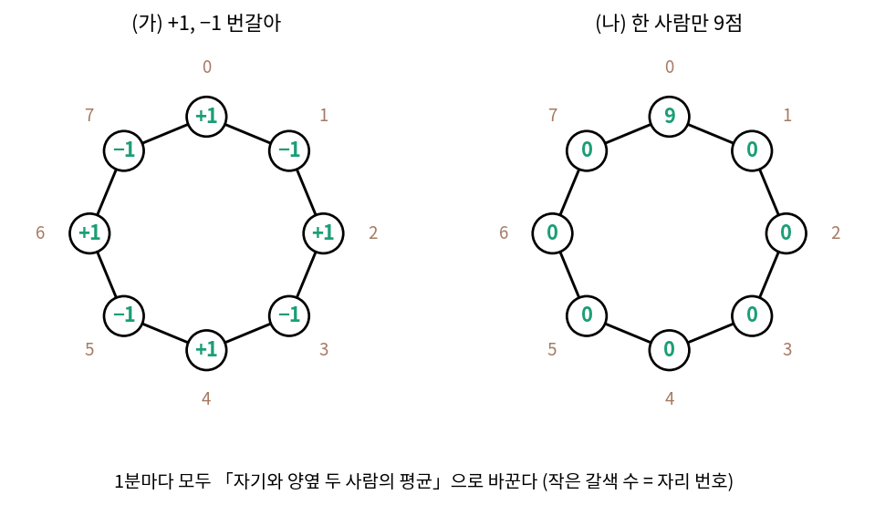
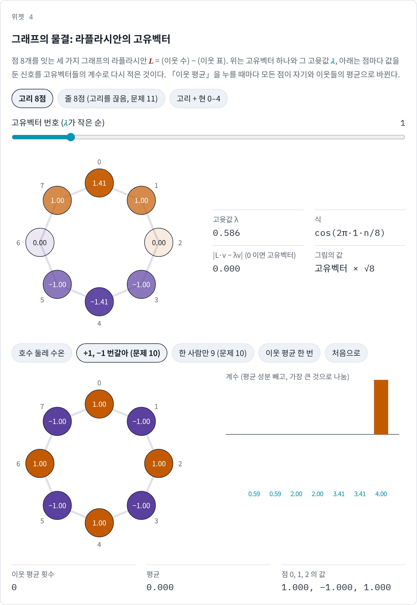
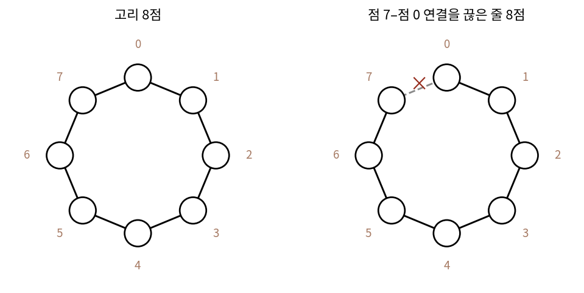
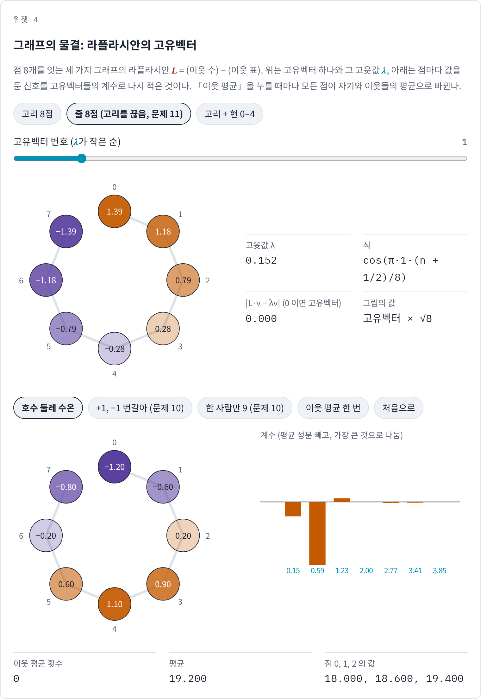
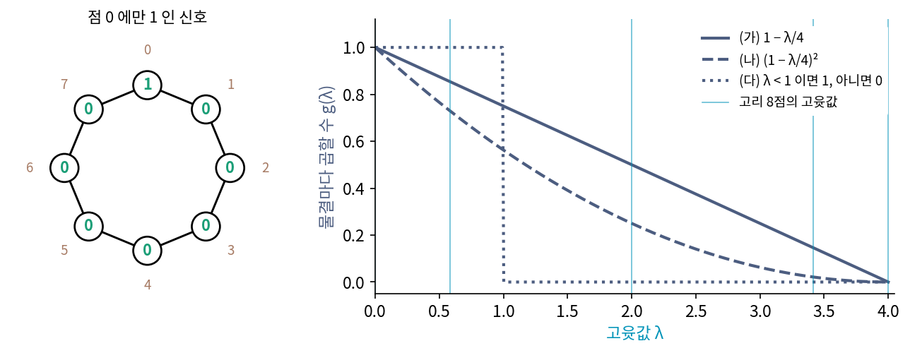

그래프 신호: 라플라시안의 고유벡터가 그래프의 푸리에
기온, 영상, 단면은 모두 칸이 가로·세로·시간의 격자 위에 고르게 놓였다. 격자에서는 신호 전체를 한 칸 미는 평행이동이 자연스러웠고, 평행이동해도 하는 일이 같은 연산은 모두 사인·코사인 물결을 축으로 썼다. 그런데 도로망의 교통 센서, 호수 둘레의 관측소, 친구 관계로 이어진 사람들처럼 칸이 이웃 관계로만 이어진 자료에는 「한 칸 민다」는 말이 없다. 이런 그래프 위의 값에도 굵은 물결과 가는 물결이 있을까, 있다면 무엇이 그 물결을 정할까?
역사: 연결의 세기를 고윳값 하나로
체코의 수학자 피들러(Miroslav Fiedler)는 1973년 체코슬로바키아 수학 학술지에 「그래프의 대수적 연결도」를 냈다. 그래프를 「(이웃 수) − (이웃 표)」 꼴의 행렬, 오늘날 그래프 라플라시안이라 부르는 행렬로 적으면, 가장 작은 고윳값은 늘 0이다. 그는 둘째로 작은 고윳값을 그래프가 얼마나 단단히 이어졌는지를 재는 수로 보고 「대수적 연결도」라 불렀다. 둘로 끊기 쉬운 그래프일수록 대수적 연결도가 작다. 이 고윳값에 딸린 고유벡터는 오늘날 피들러 벡터라 불리고, 그 부호로 그래프의 점들을 두 클러스터(서로 촘촘히 이어진 점들의 덩어리)로 가르는 계산에 쓰인다.

다리를 하나 더 놓으면 대수적 연결도는 0.354 에서 0.764 로 커지며, 고리 8점은 0.586, 줄 8점은 0.152 다. 그 뒤 수십 년 동안 그래프의 고윳값은 그래프를 가르고 그리는 도구로 쓰였고, 2013년 슈먼(David I. Shuman)과 동료들은 IEEE 신호 처리 잡지에 「그래프 위의 신호 처리라는 새 분야」를 실어, 라플라시안의 고유벡터를 그래프의 푸리에 기저로 삼아 신호 처리의 도구들을 그래프로 옮기는 흐름을 한데 정리했다.

다리 하나로 이은 그래프면 그림만 봐도 어디를 끊을지 보이는데요. 고윳값까지 구할 필요가 있어요?

점 8개면 그렇죠. 점 100개가 얽힌 그래프를 두 클러스터로 나누는 방법은 몇 가지일까요?

음, 점마다 어느 클러스터에 넣을지 고르니까 일단 2¹⁰⁰가지요. 한 클러스터가 빈 경우와 맞바꾼 경우를 빼도 2⁹⁹ − 1, 6 × 10²⁹가지쯤이에요. 다 해 볼 수가 없네요.

피들러의 수는 나누는 방법을 하나하나 해 보지 않고 행렬 하나의 고윳값으로 끝나네요. 그런데 왜 둘째로 작은 고윳값이에요? 가장 작은 건 늘 0이라면서요.

고윳값 0의 고유벡터는 모든 점이 같은 값인 벡터예요. 피들러는 둘째 고윳값을 연결의 세기로 읽었고, 고유벡터들을 그래프 위의 신호를 적는 기저로 보는 흐름을 슈먼과 동료들이 정리한 것은 40년 뒤였어요.

모든 점이 같은 값이면 출렁임이 하나도 없는 물결이네요. 그럼 고윳값이 클수록 이웃끼리 더 엇갈리는 물결이 되는 걸까요?
고리 8점의 고유벡터
격자와 그래프를 잇는 다리부터 놓자. 점 8개를 고리로 이은 그래프는 칸 8개짜리 고리 줄과 같은 것이어서 점 하나의 이웃은 양옆 둘이다. 그래프 라플라시안은 각 점의 값에서 이웃들의 값을 뺀 것, 곧 「(이웃 수) × (자기 값) − (이웃 값의 합)」을 점마다 계산하는 행렬이다. 고리에서는 2 × (자기 값) − (왼쪽 값) − (오른쪽 값)이 되어, 칸 신호의 둘째 차분에 마이너스를 붙인 것과 같다.
고리 8점의 L의 고윳값을 작은 순으로 구하면 0, 0.586, 0.586, 2, 2, 3.414, 3.414, 4 다. 식 2 − 2cos(2πk/8)에 k = 0, 1, …, 7을 넣은 값과 같고, 고유벡터는 이산 푸리에 변환의 물결 e2πikn/8 여덟 개와 같다. 실수로 적으면 k = 1 의 코사인 물결 (1, 0.707, 0, −0.707, −1, −0.707, 0, 0.707)에 L을 곱하면 (0.586, 0.414, 0, −0.414, −0.586, −0.414, 0, 0.414), 점마다 0.586 배가 된다. +1과 −1이 번갈아 오는 물결은 4배가 된다.

왜 하필 이산 푸리에 변환의 물결일까? 고리의 라플라시안은 점 번호를 하나씩 미는 평행이동과 바꾸어 곱해도 같다(SL = LS). 고리를 한 칸 돌려도 그래프가 그대로이기 때문이다. 평행이동과 바꾸어 곱해도 같은 행렬은 모두 원형 행렬이고, 원형 행렬은 모두 같은 물결을 고유벡터로 쓴다. 고리 그래프의 대칭이 물결을 고른 것이다.
그런데 고리에 현 하나(점 0과 점 4)를 더하면, 고윳값은 0, 0.586, 1.268, 2, 2, 3.414, 4, 4.732 로 바뀌고 이산 푸리에 변환의 물결은 더는 고유벡터가 아니다. 한 칸 돌리면 현이 다른 자리로 가므로 평행이동 대칭이 깨졌다. 그래도 L은 대칭 행렬이라 서로 수직인 고유벡터 8개가 있고, 그 고유벡터를 그래프의 물결로 쓸 수 있다. 고윳값의 크기는 그 물결이 얼마나 출렁이는지를 잰다. 신호 x에 대해 xᵀLx는 이어진 두 점마다 값 차이의 제곱을 더한 것이고, 고유벡터 uk에 넣으면 λk가 나온다. 고윳값이 작은 고유벡터는 이웃끼리 비슷한 굵은 물결, 큰 고유벡터는 이웃끼리 엇갈리는 가는 물결이다.
이렇게 신호를 라플라시안의 고유벡터들로 다시 적은 계수 ck = ukᵀx를 구하는 일을 그래프 푸리에 변환 (라플라시안 고유벡터로 다시 적기 / graph Fourier transform)이라 하고, 고윳값 λ가 주파수 노릇을 한다. 고리 그래프에서는 보통의 이산 푸리에 변환과 같고, 대칭이 없는 그래프에서도 같은 말로 쓸 수 있다.
호수 둘레 관측소 8곳의 수온(°C, 직접 정한 값) 18.0, 18.6, 19.4, 20.1, 20.3, 19.8, 19.0, 18.4 로 해 보자. 해가 드는 남쪽이 따뜻하고 북쪽이 차갑다. 고리 그래프의 계수 크기는 k = 0 이 19.2(평균), k = ±1 이 0.552 이고 나머지는 0.032 이하로, 평균을 뺀 세기의 99.47% 가 가장 굵은 물결 하나에 있다. 관측소 3에 1.2 °C 튄 값을 더하면 k = 2, 3, 4 의 계수가 0.163, 0.125, 0.175 로 커지고, 이웃 차의 제곱 합 xᵀLx는 2.940 에서 7.020 으로 뛴다. 튄 값 하나는 가는 물결에 나타난다.
ML에서: 스펙트럼 그래프 신경망에서 GCN 까지
합성곱 정리에 따르면 칸에서 합성곱은 물결마다 곱하기였다. 브루나(Joan Bruna), 자렘바(Wojciech Zaremba), 슬람(Arthur Szlam), 르쿤(Yann LeCun)은 2014년 국제 학습 표현 학회(ICLR)에 낸 「그래프 위의 스펙트럼 신경망과 국소 연결 신경망」에서 이 말을 그래프로 옮겼다. 신호를 라플라시안의 고유벡터로 다시 적고, 물결마다 곱할 수를 배우게 한 것인데, 그러려면 먼저 고유벡터를 구해야 하고, 고유벡터는 그래프 전체에 퍼져 있다.
데퍼라드(Michaël Defferrard), 브레송(Xavier Bresson), 반데르헤인스트(Pierre Vandergheynst)는 2016년 신경정보처리시스템 학회(NIPS)에 낸 「빠른 국소 스펙트럼 필터를 쓴 그래프 위의 합성곱 신경망」을 냈다. 그들은 물결마다 곱할 수 g(λ)를 고윳값의 다항식(체비셰프 다항식)으로 제한했다. 그러면 필터는 라플라시안 L의 거듭제곱의 합이 되어 고유벡터를 구할 필요가 없고, 차수가 K 면 K 홉(간선을 K 번 건너는 거리) 안의 이웃만 섞는다. 킵프(Thomas N. Kipf)와 웰링(Max Welling)의 그래프 합성곱 신경망(GCN, ICLR 2017)은 이 다항식을 1차까지만 남기고 조금 다듬은 것이다. 논문은 이를 「스펙트럼 그래프 합성곱의 국소적인 1차 근사」라고 적었고, 그래서 GCN 한 층은 「자기와 이웃들의 무게 평균」이 된다. 다항식 차수와 섞이는 이웃의 관계는 아래 문제 12에서 직접 센다.
문제 10. 원탁의 소문
원탁에 8명이 둘러앉았다. 1분마다 모두가 동시에 자기 의견 점수를 「자기와 양옆 두 사람의 평균」으로 바꾼다. (가) 처음 점수가 +1, −1 로 번갈아 있으면 1분 뒤 어떻게 되는가? (나) 한 사람만 9점이고 나머지는 0점이면 1분, 2분, 3분 뒤의 점수는? (다) 고리 8점의 물결 k = 1 과 k = 4 는 1분마다 몇 배가 되는가? 5분 뒤에는? (위젯 4의 「+1, −1 번갈아」와 「한 사람만 9」로 확인해 보자.)

(가)는 +1 인 사람 양옆이 −1, −1 이니까 (1 − 1 − 1)/3 = −1/3 이요. 다 −1/3 이랑 +1/3 으로 번갈아요. 줄어들긴 하는데 부호가 바뀌었어요.
(나)는 1분 뒤 9점이던 사람과 양옆이 3점씩이야. 2분 뒤 (3, 2, 1, 0, 0, 0, 1, 2), 3분 뒤 (2.333, 2, 1, 0.333, 0, 0.333, 1, 2). 점점 퍼지면서 평평해져.
(다)를 하기 전에, 「자기와 양옆의 평균」을 라플라시안 L로 적어 볼래요?
평균은 (자기 + 양옆)/3 이에요. Lx 는 2 × 자기 − 양옆의 합이었으니까… 양옆의 합은 2 × 자기 − (Lx) 예요.
그럼 넣으면 (3 × 자기 − Lx)/3 이네.

응, 평균 = x − Lx/3 이야.
고유벡터에 걸면 몇 배가 될까요?

1 − λ/3 배요. k = 1 은 λ = 0.586 이라 0.8047 배, k = 4 는 λ = 4 라 −0.3333 배예요. (가)에서 −1/3 이 나온 게 이거였어요.

5분 뒤면 k = 1 은 0.3375, k = 4 는 −0.0041 이에요. 엇갈린 의견은 금방 사라지고, 원탁 반쪽끼리 다른 굵은 의견은 오래 남네요.

단톡방에서 바로 옆 사람 말만 듣고 따라가면, 사소한 엇갈림은 금방 없어져도 원탁 반쪽끼리 갈린 의견은 오래가요.

문제 11. 고리를 끊으면
고리 8점에서 점 7과 점 0 사이의 연결을 끊어 줄(경로) 8점으로 만든다. (가) 고리의 물결 e2πin/8 은 여전히 줄 그래프의 고유벡터인가? (나) 줄 8점의 고윳값을 구하고, 고윳값 0.152 의 고유벡터를 찾아라. (다) 고리와 달리 왜 같은 고윳값이 둘씩 나오지 않는지 대칭으로 설명하라. (위젯 4의 「줄 8점」으로 확인해 보자.)

(가)는 점 하나 끊었을 뿐이니까 거의 같겠죠. 고유벡터일 것 같아요.
그 물결에 줄 그래프의 L을 곱해서 0.586 배가 되는지 점마다 확인해 봐요.

가운데 점 1~6 은 0.586 배가 맞는데, 양 끝 점 0 과 7 에서 나머지 |Lv − λv| 가 0.765 씩 남아요. 끝에서 이웃이 하나뿐이라서요. 고유벡터가 아니네요.
(나)는 고윳값을 구하면 0, 0.152, 0.586, 1.235, 2, 2.765, 3.414, 3.848 이야. 고리 때랑 비슷한데 더 촘촘하네.
고리의 2 − 2cos(2πk/8)과 견주면 어떤 식으로 보이나요?
2 − 2cos(πk/8)요. 고리의 2πk/8 이 πk/8 로 반이 됐어요.
0.152 의 고유벡터는 코드로 찾아볼게. (0.981, 0.831, 0.556, 0.195, −0.195, −0.556, −0.831, −0.981)이고, 점마다 0.152 배가 돼.
그거 cos(π(n + 1/2)/8)이네. 코사인만으로 칸을 다시 적는 이산 코사인 변환의 물결이야.

그래요. (다)는요? 고리에서 고윳값 0.586 이 두 번 나온 건 코사인 물결과 사인 물결이 함께 있어서였죠.
고리는 한 칸 돌려도 그대로라서, 사인 물결을 돌리면 코사인 물결이 돼요. 그래서 둘이 같은 고윳값을 나눠 가졌고요. 줄은… 돌리면 끝이 바뀌어요.
그럼 줄에 남은 대칭은 뭘까요?

평행이동 대칭은 없고(SL ≠ LS), 좌우 뒤집기뿐이에요.

뒤집기로는 짝이 안 생겨?
뒤집어도 그대로인 물결은 코사인 쪽이라 고윳값마다 하나씩만 남아. 끝이 열린 구간이면 코사인이 맞는다는 걸 그래프가 다시 말해 주네.

양 끝을 묶은 줄과 양 끝이 자유로운 막대의 진동 모드가 다르던 것과 같아. 경계 조건이 기저를 바꿔.

문제 12. 필터의 차수와 이웃의 범위
고리 8점에서 물결마다 곱할 수 g(λ) 를 정하고, 그래프 위의 필터 U g(Λ) Uᵀ 를 만든다(U 는 고유벡터를 늘어놓은 행렬, Λ(대문자 람다) 는 고윳값을 대각에 놓은 행렬). (가) g(λ) = 1 − λ/4 의 필터를 점 0 에만 1 이 있는 신호에 걸면? (나) g(λ) = (1 − λ/4)² 이면? (다) 「λ < 1 인 물결만 그대로, 나머지는 0」인 필터면? 세 필터를 GCN 과 브루나 외의 방식에 견주어 말하라.

(가)는 고유벡터를 다 구해서 곱해 보면 (0.5, 0.25, 0, 0, 0, 0, 0, 0.25)가 나와요. 자기는 반, 양옆은 4분의 1씩이요.
고유벡터를 구하지 않고 같은 답을 낼 수 있어요?
1 − λ/4 를 L에 그대로 쓰면 U(1 − Λ/4)Uᵀ = I − L/4 네요.
I − L/4 의 한 줄에는 0 이 아닌 칸이 몇 개예요?
L은 이웃끼리만 0 이 아니니까 자기와 양옆, 셋뿐이에요. 고유벡터 없이 이웃만 보면 돼요. 문제 10(원탁의 소문)의 「자기와 양옆 평균」과 같은 모양이에요. 무게만 1/3 대신 1/2, 1/4 이고요.
(나)는 (I − L/4)² 이라 이웃의 이웃까지 가. (0.375, 0.25, 0.0625, 0, 0, 0, 0.0625, 0.25)로 0 이 아닌 칸이 다섯이야. 다항식 차수가 하나 오를 때마다 한 홉씩 멀리 섞여.
(다)는 깔끔해 보이는데요. 낮은 물결만 남기는 거니까요.
해 보면 (0.375, 0.302, 0.125, −0.052, −0.125, −0.052, 0.125, 0.302)예요. 점 0 의 값이 고리 반대편 점 4 까지 −0.125 로 퍼지고, 여덟 칸이 다 0 이 아니에요.
낮은 물결만 남겼는데 왜 멀리까지 퍼져?
물결마다 마음대로 곱할 수를 정하면 다항식으로 못 적으니까 그래프 전체가 섞여.
그럼 세 필터를 방식에 견주면요?
브루나 외의 방식이 이런 필터도 배울 수 있는 대신, 고유벡터를 다 구해야 하고 필터가 그래프 전체에 퍼지는 것도 그래서네요. 데퍼라드 외는 다항식으로 묶어 K 홉 안으로 막았고, GCN 은 그걸 1차, (가)처럼 자기와 이웃만 섞는 꼴로 줄인 거고요.

사진 앱에서 「흐리게」는 옆 칸만 섞는 작은 합성곱 커널인데, 그걸 여러 번 하면 점점 넓게 흐려지잖아요. 다항식 차수가 그 횟수였네요.